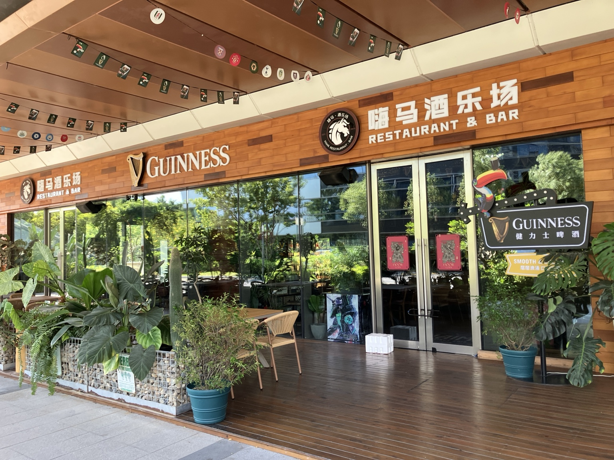
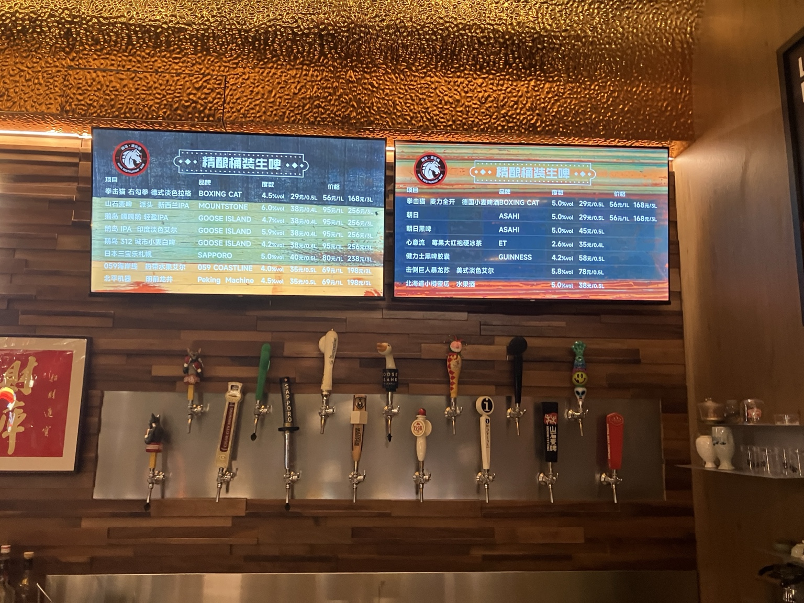
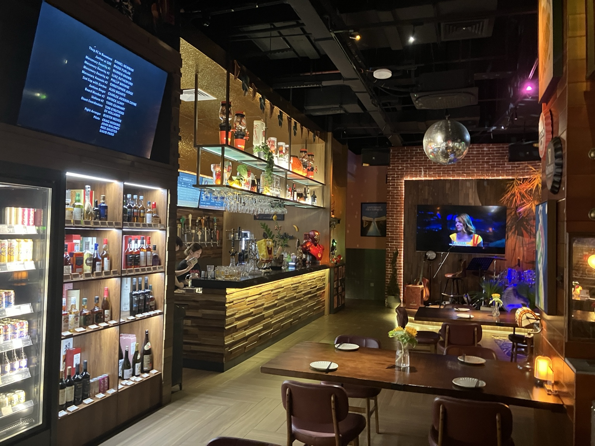
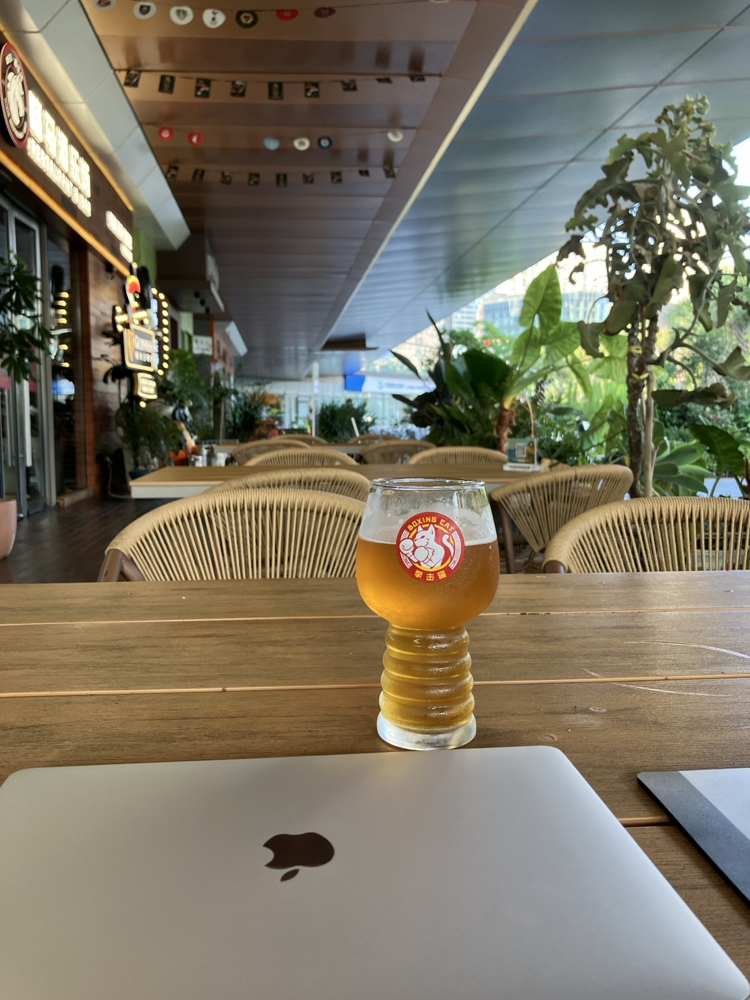
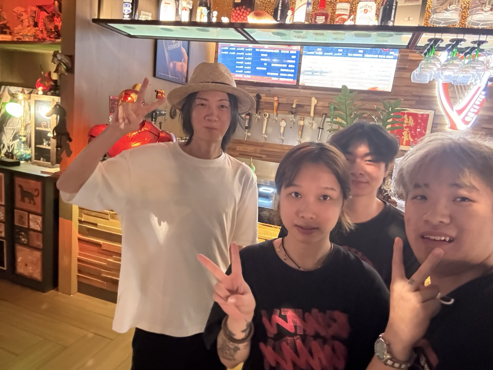

中国福建省の港湾都市、廈門（アモイ / Xiamen）に来た。
空港に着いたのが2026年10月1日の夜。
折しも国慶節初日。
廈門は初訪で土地勘もないから、適当に空港からDidiで10分ほどの宿に泊まった。
明けて翌日、近くをぶらついて、目に入ったモールに入ると大混雑。
まじで超絶大混雑。
ラッシュ時の新宿駅並みの混雑。
これはとても街歩きできる雰囲気じゃないし、
旧市街やコロンス島の方に行ったら、
さらに激混みだろうなーと思い、
国慶節が終わるまでは、廈門島外で過ごすことにした。
のんびり穏やかに過ごしたいけど、
現地廈門人が暮らしてる地区がよかったから、
少し下調べした結果、集美地区に宿をとることに決めた。
チェックインを終えて、街の散策を始めるとすぐにギネスの看板が目に留まった。

中国でdraftが飲める場所を見つけるのはまあまあ難しくて、
pub文化が根付いてる香港や、どこでも簡単にdraftが飲める日本とは勝手が違う。
こんなにすぐ見つかるなんてありがたいと思い、
上機嫌で入店したのが、集美到着初日の夜。
店員さんは中国語オンリーだけど、
スマホ翻訳で、tapがどんな銘柄なのか説明してくれて、
接客は丁寧だった。
香港のpubで飲むような、キンキンに冷えた繊細な味わいのdraftってわけじゃないけど、
しっかりcraft感を味わえるし、洒落乙な音楽がかかってて、居心地は良かった。

2日目は周辺をしっかり散策して、
居心地の良さそうなpubを探したんだけど、
どうもピンと来る店が見つからず、
わりと夜遅くに初日のpubに戻ってきた。
その日は国慶節中盤、土曜の夜で、
店内は昨日よりだいぶ賑わっていた。
それでも店員さんは手を上げて挨拶してくれて、
「昨日と同じtapでいい？」
みたいな仕草をしてくれた。

3日目に入ったときも、
同様に手を振って迎えてくれた。
これなのよ。
こーゆーのなのよ。
店内の居心地とか、
draftの味や品質も、もちろん大事なんだけど、
やっぱり「人」。
笑顔で手を振って迎えてくれる。
昨日飲んだtapを覚えてくれている。
ほんの些細なやりとりかもしれないけど、
あるとないじゃ店の印象が全然変わってくる。
もちろん、人との交流がなくても、居心地のいいpubや店はたくさんある。
でも、たとえ些細なことでも、
「人」との出会いがあった場所は、
旅の物語の一部になる。
店員さんたちはみんな中国語オンリーで、
私は中国語が話せないから、
言葉ではほとんど会話できないんだけど、
言葉を介さなくても伝わってくるものがある。
あー、温かく迎えてくれてるなー、って伝わってくる。
3日目でMy faves入りは確定しましたね。
その後も集美に滞在している間は、文字通りほんとに毎晩通った。

そろそろ集美を離れるかもって頃に、
「高評価のクチコミレビューとか書いて、この店に貢献したいけど、
中国だとGoogle Maps使えないんだよなー。
じゃあ自分ができることと言ったら、Webで記事書く？」
って考えて、
会計が終わったあとに、
「我真的很喜欢你们这里，也很想推荐给其他旅行者。
可以让我在我的网站和社交媒体上介绍你们这里吗？
还有，可以一起拍张照片吗？」
（私のWebサイトやSNSで、お店紹介してもいい？
それから一緒に写真撮ってもらえる？）
って、スマホで表示したら、
快諾中の快諾。
写真10枚くらい撮ったかな笑
もっと撮ったかも笑

テラス席に座って、
心地よい10月の海風を感じながら、
やっぱり旅は浪漫があっていいなー。
世界にまたひとつ、沼れる街が増えたなー。
そんなことを思わせてくれた、
厦門・集美のpubとの出会いでした。